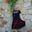

Кухонные ножницы. Как выбрать?
2013-09-09
Измельчить зелень для салата, разделать тушку курицы или утки, вскрыть пакет с молоком, срезать плавники у рыбы – все это намного проще и быстрее сделать не ножом, а ножницами, причем специальными поварскими.
Современные поварские ножницы отличаются от бытовых портновских усиленными ручками и особо острыми лезвиями, ведь они предназначены для разрезания жестких продуктов, а не легких ниток и тканей.
Ножницы универсальные
Многофункциональные ножницы для кухни похожи на своих портновских собратьев, однако у них есть одна особенность – мелкие зубчики, которые позволяют удерживать скользкие предметы (филе рыбы или мяса). Иногда у основания лезвий бывает выемка для открывания пивных бутылок и баночных крышек, а между ручками – овальная полость с зубцами для колки орехов. С помощью кухонного универсала можно легко порезать бекон, ветчину, зелень для салата, рыбу, филе мяса или птицы, а также вскрыть пакеты с молоком или удалишь бечевку. Однако если необходимы ножницы для разделки куриной или утиной тушки, универсальный помощник не подойдет – с костями он попросту не справится.
Ножницы должны идеально лечь в ладонь вне зависимости от того, правша ты или левша.
Многофункциональные кухонные ножницы Arcos: 185601, 185300, 185400, 185500
Ножницы для костей
Для разделывания целого кролика или гуся лучше приобрести более основательный вариант кухонных ножниц. По внешнему виду они напоминают садовый секатор – имеют загнутые лезвия с зубчиками, которые легко дробят кости, отделяют крылья птицы. Дополнительно некоторые экземпляры имеют полукруглую выемку посередине для рассекания особо прочных костей. Хорошим тоном считается, если ножницы для разделки птицы, как, впрочем, и любые другие кухонные, сделаны из качественной нержавеющей стали, ведь они постоянно контактируют с водой и пищевыми кислотами.
Ручки у ножниц для костей могут быть металлическими или пластмассовыми.
Ножницы для костей Arcos: 539000
Ножницы для хвостов и плавников
Все знают, что самое неприятное в процессе готовки рыбы – отрезать цепкие колючие плавники и хвосты. Справиться с непростой задачей тебе помогут специальные ножницы для разделки рыбы. Они имеют короткие лезвия и мощные ручки без колец. Их основное предназначение – отрезать плавники и хвосты. Так как после подобной разделки мясо и кости могут застрять в зубчиках или в месте соединения «концов», желательно выбирать разборные ножницы: лезвия у них максимально разводятся в разные стороны, и их можно легко вымыть.
Лезвия у них, как правило, очень острые, поэтому лучше останови свой выбор на модели, которая снабжена безопасным фиксатором ручек в закрытом состоянии.
Ножницы для хвостов и плавников Arcos: 539100
Для укропа и петрушки
Для того чтоб быстро, ровно и мелко нашинковать укроп или петрушку, можно приобрести специальные ножницы для зелени. Такие ножницы имеют маленькие, но очень острые лезвия. Иногда фантазия производителей не останавливается на традиционном варианте – некоторые ножницы имеют три или пять параллельных острых «концов» на одной ручке, позволяющих заметно ускорить процесс нарезки.
Особенно удобно им воспользоваться в тех случаях, когда надо накрошить немного укропа, петрушки или кинзы прямо в тарелку с борщом, пельменями или салатом.
Ножницы для укропа и петрушки Arcos: 185701
Ножницы для пиццы
Всем знаком круглый роликовый нож для разрезания пиццы. Однако есть и другой вариант «раскраивания» итальянской лепешки – с помощью специальных ножниц. Они не только позволяют ровно порезать пиццу, но и красиво положить кусочки на тарелки – одни экземпляры снабжены для этого дополнительной лопаточкой, а другие имеют такие лезвия, которые сами в закрытом состоянии образуют «лопату».
Есть также ножницы изогнутой формы, которые можно использовать не только для итальянской выпечки, но и для русских пирогов. Они режут аккуратно, не крошат изделия на кусочки и не царапают поверхность противня.
Уход за кухонными ножницами Кухонные ножницы не стоит мыть в посудомоечной машине – от химикатов, сильных водяных струй и ударов о другие предметы они могут быстро затупиться. Лучше сначала сполоснуть их под холодной водой (это отобьет запах рыбы), потом убрать жир и остатки продуктов горячей водой с помощью моющих средств, затем ещё раз сполоснуть прохладной водой и вытереть насухо. Не нужно также забывать регулярно точить кухонные ножницы собственными силами (в комплект иногда входит точило) или в мастерской.
Опубликованно в разделе Полезно знать
Похожие статьиКухонные ножи. Как выбрать?Кухонные ножи. Как выбрать?
Новости
Клиенты о ножах Arcos
 Ірина Іванова
Рассылка